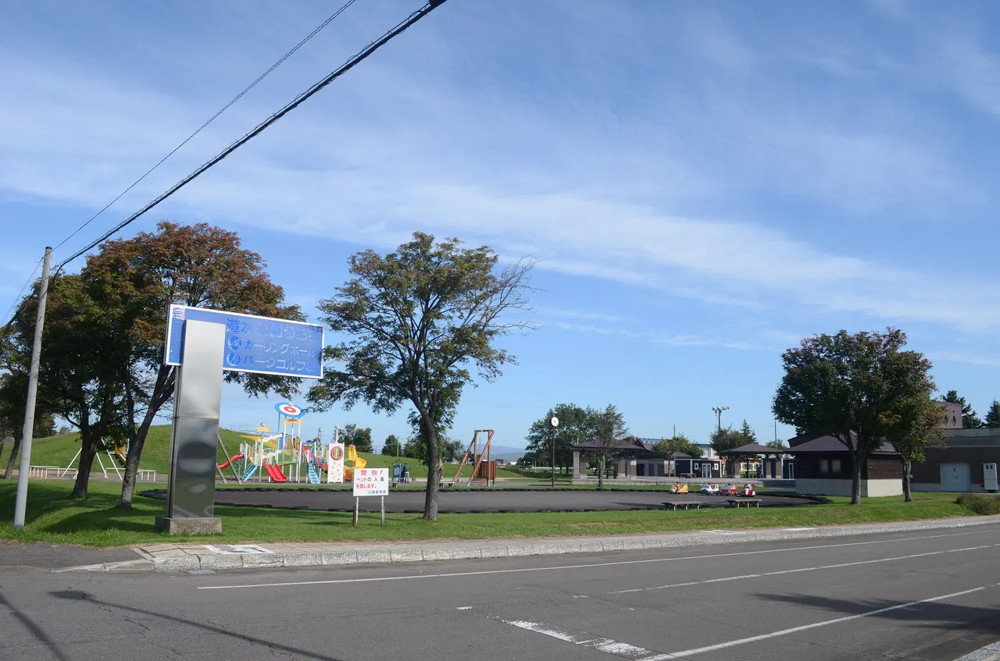
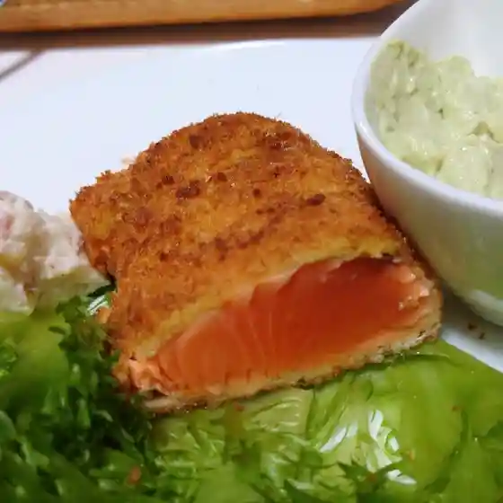
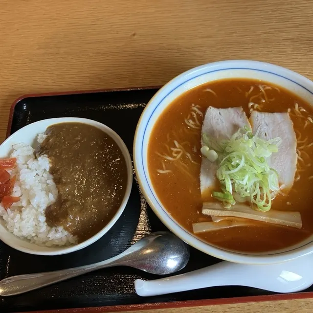
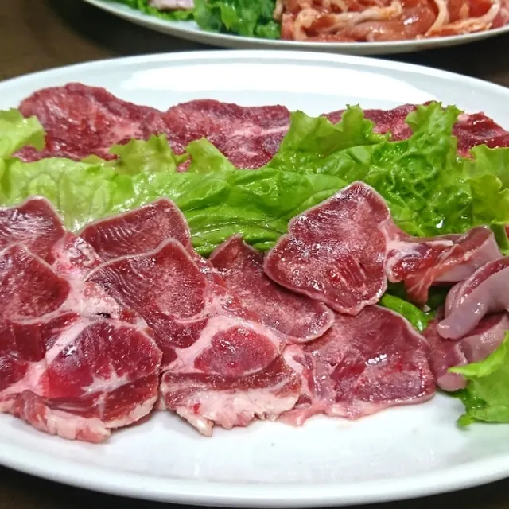
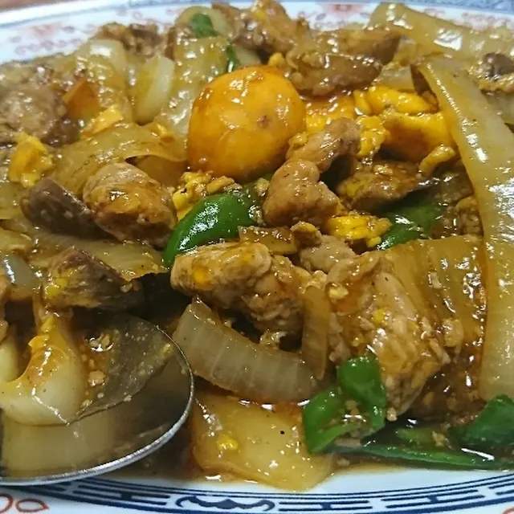
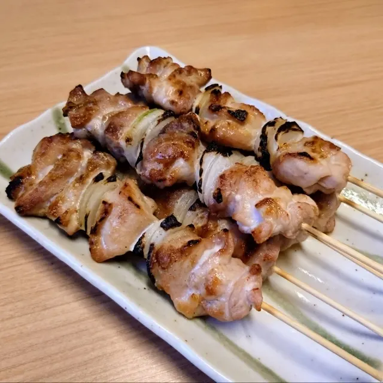
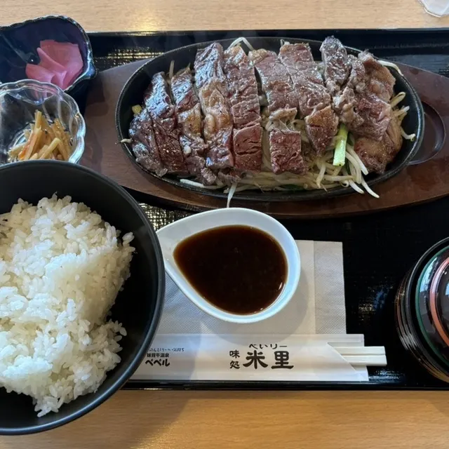

Moseushi
Moseushi · Hokkaido
Moseushi
Highlighted on the Hokkaido map.

Stay
妹背牛温泉ペペル
Moseushi Onsen Peperu
Onsen with cottages in Moseushi, Hokkaido.
Dining
炭焼き 杜

Sumiyaki Ki Mori
ばにはつ 分家

Banihatsu Bunke
ピッコロ

Pikkoro
焼肉居酒屋心

Yakiniku Izakaya Kokoro
ラッキー食堂

Rakkii Shokudou
いっぷく

Ippuku
もせうし旅館

Moseushi Ryokan
味処 米里

Ajidokoro Yonesato
CAFEクリント
Cafe Kurinto
大黒屋菓子舗
Daikokuya Kashi Ho
紀州
Kishuu
高田とうふ店
Takada Toufu Mise
米久
Kome Kyuu
妹背牛温泉ぺぺル
Moseushi Onsen Pepe Ru
浜っ子鮨
Hamakko Sushi
一八番食堂
Ichihatsu Ban Shokudou
味処米里
Ajidokoro Yonesato